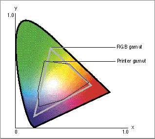

Legacy Document
Important: The information in this document is obsolete and should not be used for new development.
Important: The information in this document is obsolete and should not be used for new development.


Color Conversion and Color Matching
Color conversion is the process of converting colors from one color space to another. Color matching, which entails color conversion, is the process of adjusting or matching these converted colors appropriately to achieve maximum similarity from the gamut of one color space to the other. Color matching always involves color conversion, whereas color conversion may not entail color matching.Different imaging devices (scanners, displays, printers) work in different color spaces, and each can have a different gamut. Color displays from different manufacturers all use RGB colors but may have different RGB gamuts. Printers that work in CMYK space vary drastically in their gamuts, especially if they use different printing technologies. Even a single printer's gamut can vary significantly with the ink or type of paper it uses. It's easy to see that conversion from RGB colors on an individual display to CMYK colors on an individual printer using a particular paper type can lead to unpredictable results.
When an image is output to a particular device, the device displays only those colors that are within its gamut. Likewise, when an image is created by scanning, only those colors within the scanner's gamut are saved. Devices with different gamuts cannot reproduce each other's colors exactly, but careful shifting of the colors used on one device can improve the visual match when the image is displayed on another.
Figure 3-7 shows examples of two devices' color gamuts, projected onto Yxy space. Both devices produce less than the total possible range of colors, and the printer gamut is restricted to a significantly smaller range than the RGB gamut. The problem illustrated by Figure 3-7 is to display the same image on both devices with a minimum of visual mismatch. The solution to the problem is to match the colors of the image using profiles for both devices and one or more color management modules .
Figure 3-7 Color gamuts for two devices expressed in Yxy space
